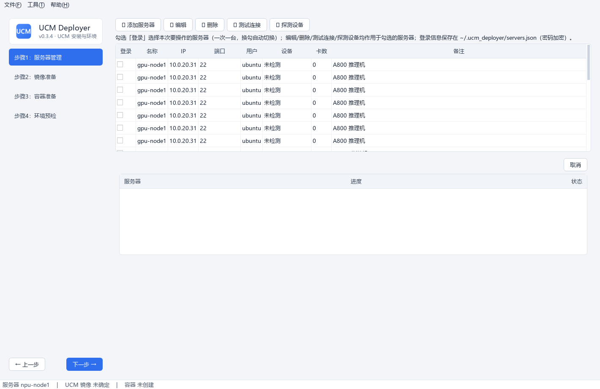
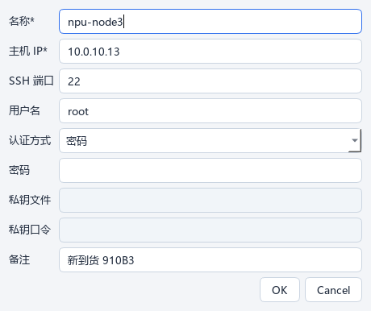
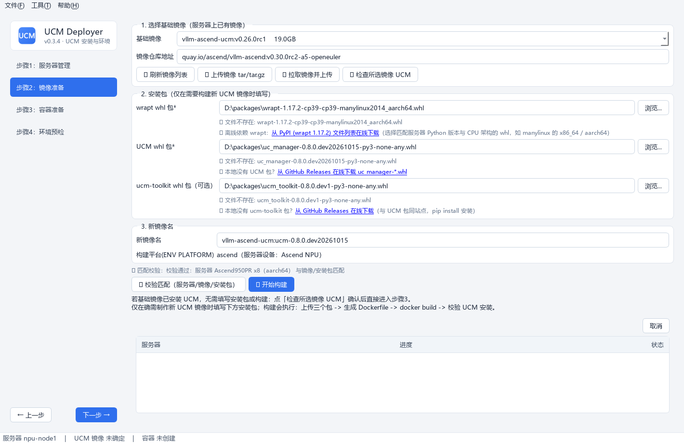
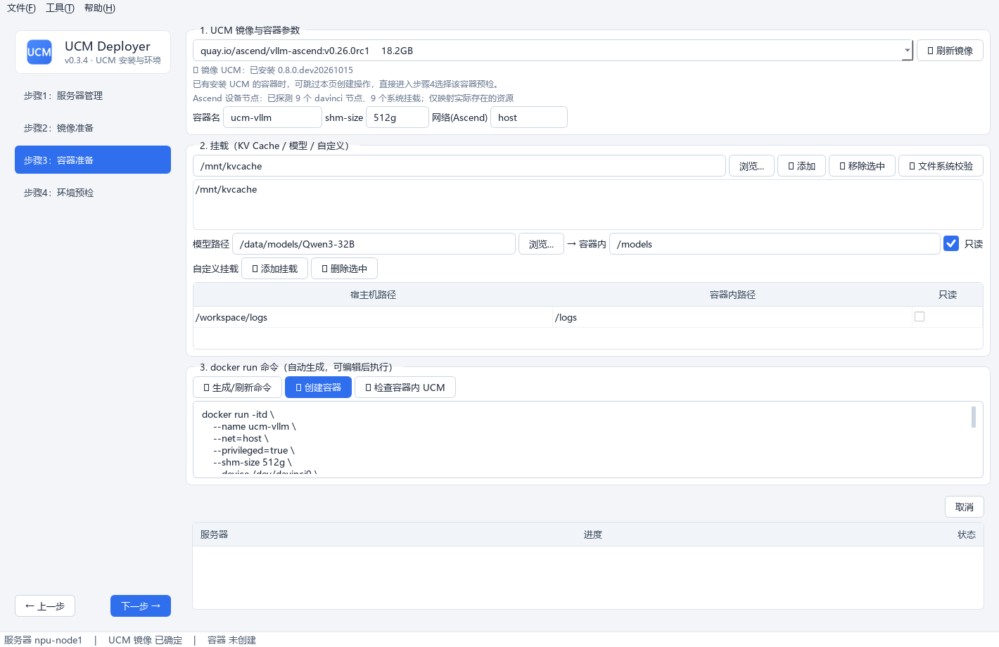
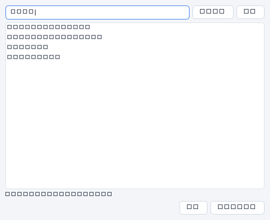
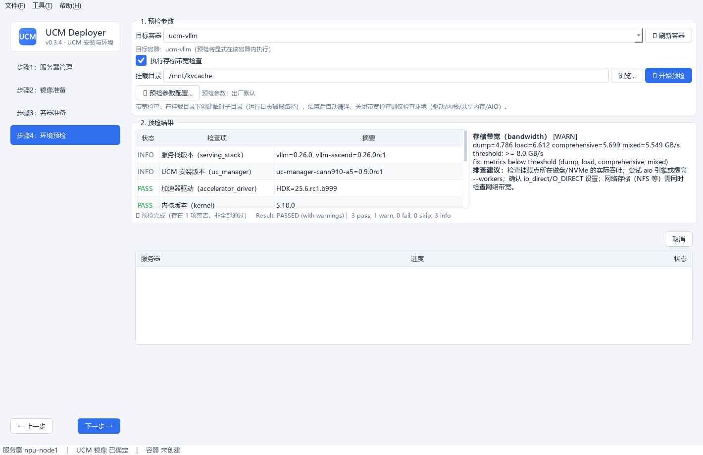
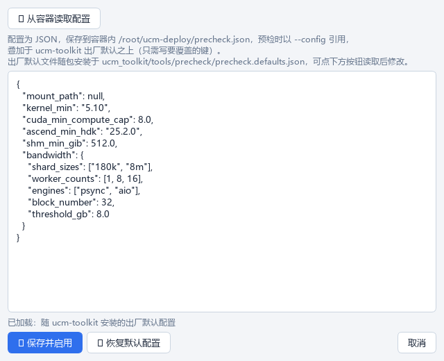
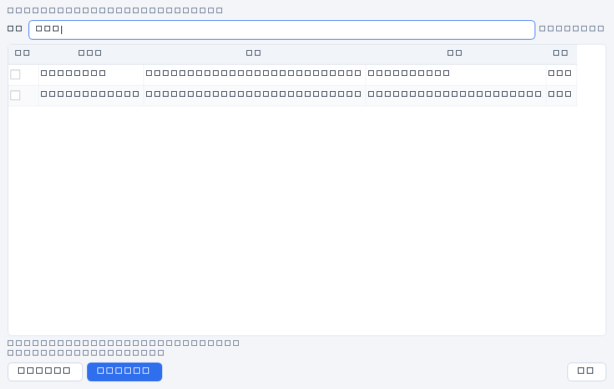
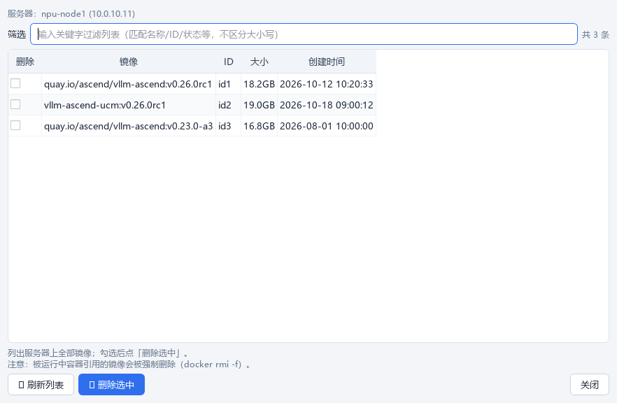

UCM Deployer
面向 vLLM / vLLM-Ascend / SGLang 运行环境的 Windows 桌面工具。专注 UCM 安装与环境预检：服务器管理、镜像准备、容器准备、容器内检查与运维清理。
工具简介
UCM Deployer 是 Unified Cache Management（UCM）的安装与环境预检工具。它把原本需要手工执行的 SSH 命令、镜像导入、离线 whl 安装、docker run 参数拼装和容器内环境检查，收敛为四个可视化步骤；不负责启动或部署推理服务。
凭据复用
密码或私钥登录，密码 Fernet 加密保存在本机，下次打开自动复用。
设备感知
自动识别 Ascend / NVIDIA 型号、卡数与 CPU 架构，并按宿主机实际资源生成容器参数。
镜像导入
支持本地 tar 包上传，也支持输入镜像仓库地址，按目标架构拉取后自动导入服务器。
按需构建
仅在基础镜像未安装 UCM 时上传 wrapt、UCM、ucm-toolkit whl 并构建新镜像。
命令透明
所有 Docker 命令先完整展示，允许编辑，再执行，避免黑盒操作。
环境预检
显式选择容器，检查驱动、内核、共享内存、AIO 与存储带宽；UCM 与驱动版本支持多来源补齐。
运维善后
按关键字筛选并清理容器或镜像，删除前展示完整对象列表。

快速开始
方式一：直接使用 EXE（推荐）
直接下载最新版 UCM-Deployer.exe，双击即可运行，无需安装 Python。
.\\UCM-Deployer.exe --smoke方式二：从源码运行
git clone https://github.com/student-jhz/UCM-Deployer.git
cd UCM-Deployer
python -m venv .venv
.venv\\Scripts\\pip install -r requirements-dev.txt
.venv\\Scripts\\python -m pytest
.venv\\Scripts\\python main.py方式三：本地打包 EXE
powershell -ExecutionPolicy Bypass -File scripts\\build_exe.ps1npu-smi；NVIDIA 服务器需 nvidia-smi 与 nvidia-container-runtime。
使用镜像仓库拉取时，本地还需安装并启动 Docker Desktop。
按需准备安装包
| 包 | 必填 | 获取途径 |
|---|---|---|
| wrapt whl | 构建新镜像时 | PyPI wrapt 1.17.2，选择匹配 CPU 架构与 Python 版本 |
| UCM whl | 构建新镜像时 | Unified Cache Management Releases |
| ucm-toolkit whl | 预检需要（镜像未内置时） | 与 UCM 同站点发布 |
服务器管理
登录要操作的服务器并探测设备信息。一次只登录一台服务器，后续所有操作都作用于当前勾选的服务器。
操作流程
- 点击「➕ 添加服务器」，填写名称、地址、账号、认证方式与备注。
- 点击「🔌 测试连接」确认 SSH 可达。
- 点击「🔍 探测设备」，自动识别设备类型、型号、卡数与 CPU 架构。
- 勾选「登录」，选择本次操作目标。

| 探测项 | 来源 | 用途 |
|---|---|---|
| 设备类型与型号 | npu-smi info / nvidia-smi | 匹配基础镜像平台，生成设备映射 |
| 卡数 | 设备探测结果 | 辅助校验步骤 3 探测到的 davinci 节点数量 |
| CPU 架构 | uname -m | 校验 whl 架构，并为镜像仓库拉取选择 linux/amd64 或 linux/arm64 |
npu-smi 或 nvidia-smi，且命令在 PATH 中可用。
镜像准备
优先复用已安装 UCM 的镜像；仅在确需制作新镜像时，才把 wrapt、UCM 与可选的 ucm-toolkit 安装进基础镜像。

操作流程
- 导入镜像：可上传本地 tar / tar.gz，也可输入
quay.io/ascend/vllm-ascend:v0.30.0rc2-a5-openeuler这类仓库地址。 - 自动匹配架构：本地 Docker 按目标服务器 CPU 架构执行
docker pull --platform，导出tar.gz后自动上传并docker load。 - 检查 UCM：点击「✅ 检查所选镜像 UCM」。已安装则记录该镜像并直接进入步骤 3，无需构建。
- 按需构建：仅在基础镜像未安装 UCM 时选择 wrapt、UCM 与 ucm-toolkit whl。
- 确认新镜像名：默认生成
<基础镜像名>:ucm-<UCM版本>，也可手动修改。 - 点击「🔍 校验匹配」，确认设备平台与 whl 架构匹配。
- 点击「🔨 开始构建」，上传安装包并执行
docker build。
| 校验项 | 规则 | 失败处理 |
|---|---|---|
| 设备平台 | NPU 对应 ascend 镜像，GPU 对应 nvidia / CUDA 镜像 | 拒绝构建并提示更换镜像 |
| whl 架构 | 文件名中的 x86_64 / aarch64 需与服务器 CPU 架构一致 | 拒绝构建并标出不匹配包 |
| UCM 安装结果 | 构建完成后在镜像内执行包检测 | 构建失败并展示完整日志 |
aarch64 / x86_64 选择对应平台，避免把错误架构镜像导入服务器。
容器准备
可基于 UCM 镜像创建新容器；如果服务器上已有安装 UCM 的容器，可跳过创建，直接进入步骤 4 选择该容器预检。

选择镜像
进入页面后自动加载镜像列表。选择镜像时会后台校验 UCM 是否安装：已安装则显示版本；未安装则提示回步骤 2 构建或更换镜像。
容器参数
进入页面后自动探测实际存在的 Ascend 设备节点与系统挂载。兼容 Ascend950PR / A5：缺失 /dev/devmm_svm 时不生成该参数，存在 /dev/ummu 或 /dev/uburma 时自动添加 --privileged=true。
| 参数 | 默认值 | 说明 |
|---|---|---|
| 容器名 | ucm-vllm | 同名容器已存在时会提示处理 |
| 共享内存 | --shm-size 512g | 满足 UCM KV-cache 页缓存要求 |
| 网络 | NPU：--net=hostGPU： -p 8000:8000 | 按设备平台自动生成 |
挂载配置
- KV Cache 目录：可添加多个，支持容器内 / 宿主机目录浏览，并可检查文件系统类型。
- 模型路径：宿主机路径挂载到容器内
/models，默认只读。 - 自定义挂载：任意宿主机与容器路径映射，可选择只读。

命令示例
# Ascend NPU：仅映射实际存在的设备节点与系统资源
docker run -itd \\
--name ucm-vllm \\
--net=host --shm-size 512g \\
--device /dev/davinci0 --device /dev/davinci1 \\
--device /dev/davinci_manager --device /dev/hisi_hdc \\
--device /dev/ummu --device /dev/uburma \\
--privileged=true \\
-v /usr/local/Ascend/driver:/usr/local/Ascend/driver \\
-v /etc/ascend_install.info:/etc/ascend_install.info \\
-v /etc/hccl_rootinfo.json:/etc/hccl_rootinfo.json \\
-v /etc/hixlep:/etc/hixlep \\
-v /usr/local/dcmi:/usr/local/dcmi \\
-v /usr/local/sbin:/usr/local/sbin \\
-v /usr/local/bin/npu-smi:/usr/local/bin/npu-smi \\
-v /usr/lib64:/usr/lib64 \\
-v /mnt/kvcache:/mnt/kvcache \\
-v /data/models/Qwen3-32B:/models:ro \\
vllm-ascend-ucm:v0.26.0rc1 bash
# NVIDIA GPU：使用 nvidia-container-runtime
docker run -itd \\
--name ucm-vllm \\
--runtime nvidia --gpus all \\
-p 8000:8000 --ipc=host --shm-size 512g \\
-v /mnt/kvcache:/mnt/kvcache \\
-v /data/models:/models:ro \\
vllm-openai-ucm:latest bash环境预检
显式选择目标容器，并在该容器内运行 ucm-toolkit run precheck，提前发现可能影响 UCM 启动或缓存读写的问题。

选择目标容器
- 进入步骤 4 后点击「🔄 刷新容器」，工具执行
docker ps -a获取服务器上的容器。 - 在「目标容器」下拉框中选择要预检的容器；也可输入容器名。
- 确认状态行显示
目标容器：...后，再开始预检。
检查模式
| 模式 | 行为 | 适用场景 |
|---|---|---|
| 环境检查 + 带宽测试 | 在指定挂载目录创建临时子目录，执行读写负载后自动清理 | 验证 KV Cache 存储路径实际吞吐 |
| 仅环境检查 | 追加 --skip-bandwidth，检查驱动、内核、共享内存与 AIO | 快速排查基础环境 |
结果解读
| 状态 | 含义 | 建议 |
|---|---|---|
| PASS | 检查通过 | 可继续后续操作 |
| WARN | 存在警告，不阻塞 | 查看详情与建议，评估是否影响业务 |
| FAIL | 关键项失败 | 按建议修复后重新预检 |
| INFO | 信息项或跳过项 | 用于留档与人工确认 |
| 检查项 | 默认规则 |
|---|---|
| 内核版本 | ≥ 5.10 |
| 共享内存 /dev/shm | ≥ 512 GiB，低于阈值警告 |
| Ascend HDK | > 25.2.0，较低版本警告 |
| 存储带宽 | 最佳组合聚合带宽 < 8 GB/s 时警告 |
| AIO 资源 | 记录 fs.aio-max-nr 与占用，供带宽超时排查 |
预检参数配置
预检参数来自 ucm-toolkit 的 JSON 配置。步骤 4 的「⚙ 预检参数配置...」提供容器内查看、编辑、保存与恢复默认能力。

| 配置 | 位置 | 说明 |
|---|---|---|
| 出厂默认 | <site-packages>/ucm_toolkit/tools/precheck/precheck.defaults.json | 随 ucm-toolkit whl 安装 |
| 自定义配置 | 容器内 /root/ucm-deploy/precheck.json | 本工具保存，预检自动引用 |
自定义配置叠加在出厂默认之上，只需写要覆盖的键。例如仅调整带宽阈值：
{
"bandwidth": {
"threshold_gb": 4.0
}
}默认带宽矩阵
2 档分片（180 KiB / 8 MiB）× 3 档并发（1 / 8 / 16）× 2 个引擎（psync / aio），共 12 个组合；每个组合执行 dump、load、mixed 三阶段。
容器与镜像清理
工具菜单提供安装与预检流程之外的运维善后功能，作用于当前勾选登录的服务器。


| 功能 | 命令 | 风险提示 |
|---|---|---|
| 清理容器 | docker rm -f | 运行中的容器会被强制停止并删除 |
| 清理镜像 | docker rmi -f | 被运行中容器引用的镜像也会被强制删除 |
| 刷新列表 | 重新查询 docker ps -a / docker images | 不会删除任何对象 |
常见问题
密码安全吗？
密码使用 Fernet 对称加密保存在本地 ~/.ucm_deployer/servers.json，密钥保存在同目录 .secret.key。密文被单独拷贝时无法直接还原明文。
按需构建镜像时 wrapt 安装失败怎么办？
确认 wrapt whl 的架构标记与服务器 CPU 架构一致：x86_64 服务器选择 manylinux x86_64 包，aarch64 服务器选择 manylinux aarch64 包。
构建成功但提示未检测到 UCM？
UCM 包名存在平台变体，例如 uc-manager-cann910-a2。工具按 uc-manager* 前缀检测；若仍失败，可手动执行 docker run --rm <镜像> pip list | grep uc 验证。
提示镜像平台与设备不匹配？
按镜像名推断的平台与服务器设备类型不一致。请更换匹配的基础镜像；自定义镜像名无法识别平台时会降级为警告。
容器内 npu-smi 报 rc=172 / -8020？
通常表示 NPU 正被其他进程或容器占用，宿主机 npu-smi info 仍可查看。该警告不影响带宽检查，停用占用方后重试。
带宽测试某组合超时？
常见于 aio 引擎、高并发与慢存储组合。可通过预检参数配置调低 combo_timeout、减少 worker 数或提高 fs.aio-max-nr。
日志在哪里？
本地日志位于 ~/.ucm_deployer/logs/ucm_deployer.log，也可通过菜单「帮助 → 打开日志目录」打开。
下载与资源
推荐版本
- 最新稳定版 EXE（直接下载）：适合正式使用。
- 源码仓库：适合开发与二次定制。
- Unified Cache Management：UCM 与 ucm-toolkit 发布地址。
反馈问题
- GitHub Issues
- 提交问题时请附上版本号、设备型号、报错截图或本地日志，便于快速定位。